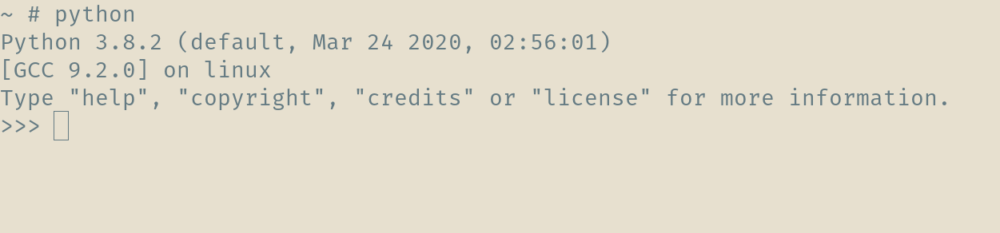
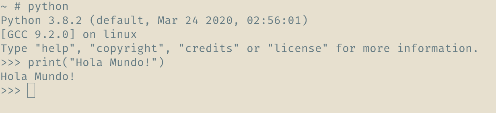
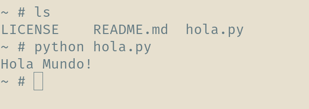
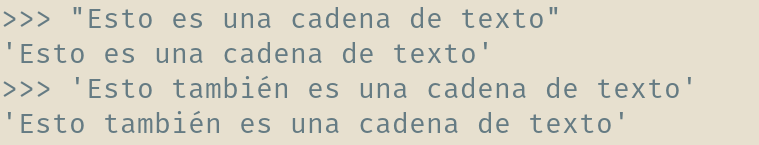
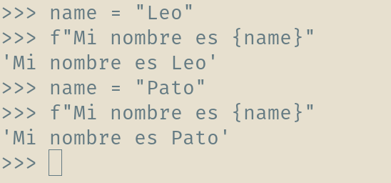
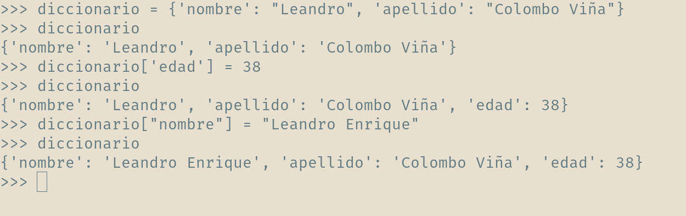
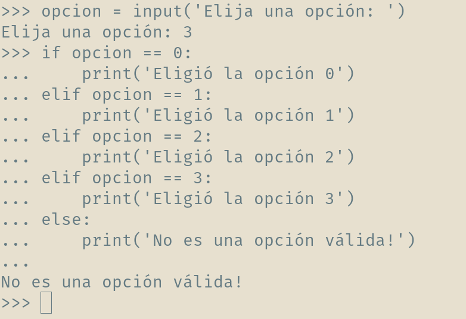
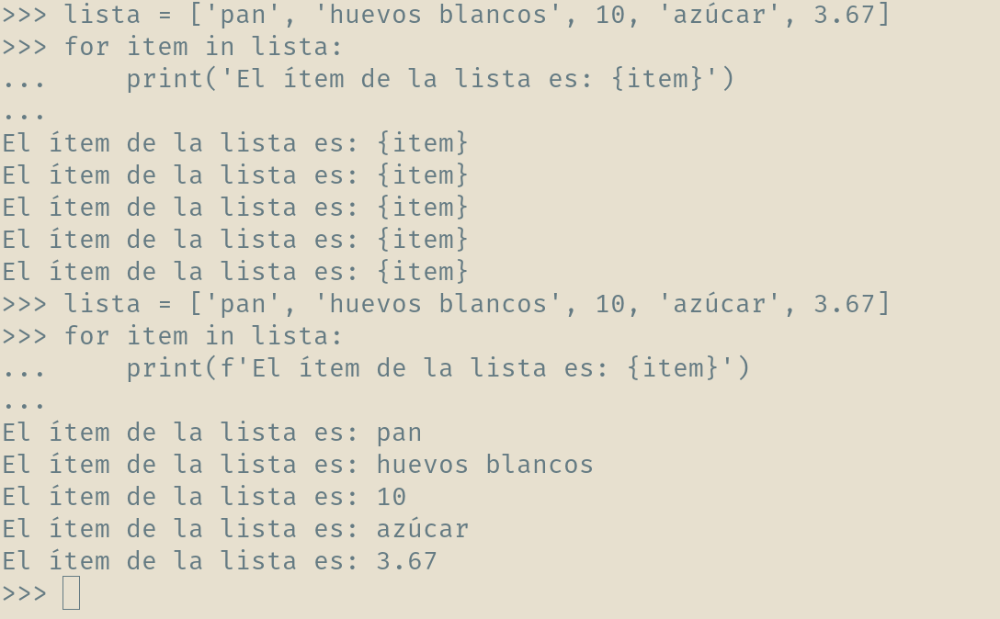
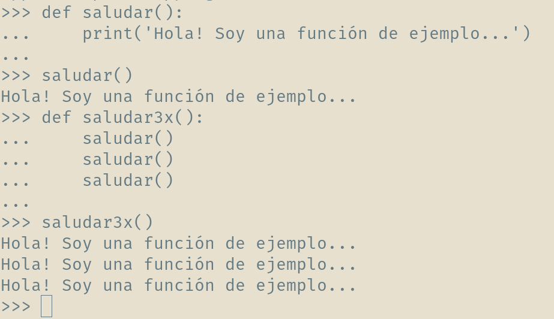
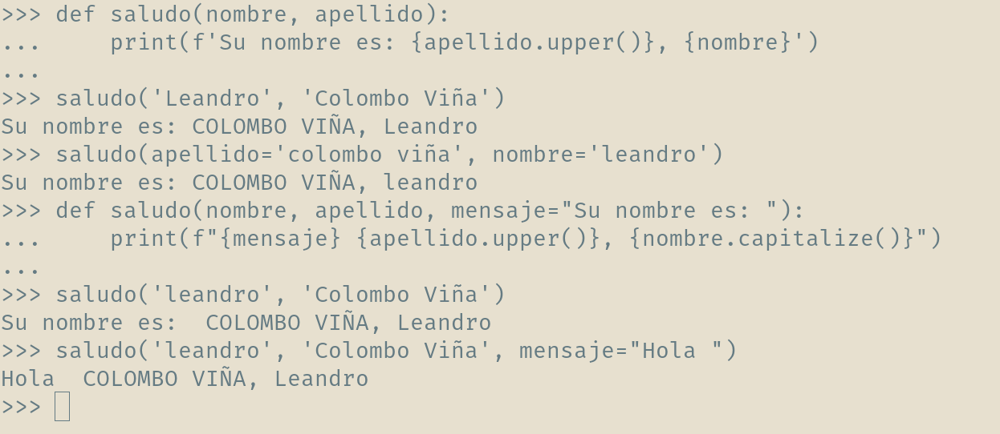

Python
Primeros Pasos
URL Presentación
https://bitson.group/slides/python1Archivos de Ejemplo
https://github.com/lecovi/short-intro-pythonDescargar ZIP
¿Python?
Creado por Guido van Rossum a principios de los '90.
- Interpretado (Scripting).
- Tipado dinámico.
- Fuertemente tipado.
- Multiplataforma.
- Multiparadigma.
Características
- Sintáxis simple, clara y sencilla.
- Fácil de aprender.
- Dinámico.
- Gestión automática de memoria.
- Gran cantidad de librerías.
No recomendable
- Bajo nivel.
- Rendimiento crítico
Python Zen

Zen de Python
- Bello es mejor que feo.
- Explícito es mejor que implícito.
- Simple es mejor que complejo.
- Complejo es mejor que complicado.
- Plano es mejor que anidado.
- Disperso es mejor que denso.
- La legibilidad cuenta.
- Los casos especiales no son tan especiales como para quebrantar las reglas.
- Aunque lo práctico gana a la pureza.
Zen de Python
- Los errores nunca deberían dejarse pasar silenciosamente.
- A menos que hayan sido silenciados explícitamente.
- Frente a la ambigüedad, rechaza la tentación de adivinar.
- Debería haber una -y preferiblemente sólo una- manera obvia de hacerlo.
- Aunque esa manera puede no ser obvia al principio a menos que usted sea holandés.
- Ahora es mejor que nunca.
- Aunque nunca es a menudo mejor que ya mismo.
- Si la implementación es difícil de explicar, es una mala idea.
- Si la implementación es fácil de explicar, puede que sea una buena idea.
- Los espacios de nombres (namespaces) son una gran idea ¡Hagamos más de esas cosas!
Instalación
Implementaciones:
- CPython
- Jython
- IronPython
- PyPy
- Brython
- RubyPython
Herramientas
A través del intérprete o ejecutando scripts.
Herramientas
- Editor de Texto: para escribir el código
- Terminal: para probar el código
- Intérprete: para jugar con cosas del código
- Entornos de Desarrollo Integrados: IDEs
IDEs
Lista en Wikipedia - Artículo en PyAR- Mu Editor: https://codewith.mu/
- Eclipse con PyDev: http://pydev.org/
- NetBeans: Python Plugin
- NINJA IDE: http://ninja-ide.org/
- SPE: Stani's Python Editor
- The Eric Python IDE
- BOA Constructor
- Kdevelop
IDEs
No libres- PyCharm: http://www.jetbrains.com/pycharm/
- Komodo: http://komodoide.com/
- Wing IDE: http://www.wingware.com/
Intérpretes Mejorados
- IPython: http://ipython.org/
- IDLE: https://docs.python.org/3/library/idle.html
Editores Texto
- vim: https://github.com/fisadev/fisa-vim-config
- emacs: Python Programming
- Geany: http://www.geany.org/
- Atom: https://atom.io/
- VS Code: https://code.visualstudio.com/
- Sublime Text: https://www.sublimetext.com/
Links de Interés
- Sitio Oficial: https://www.python.org/
- Comunidad PyAR: http://python.org.ar/
- Tutorial: http://docs.python.org.ar/tutorial/
- Asociación Civil: https://ac.python.org.ar/
- The Hitchhiker’s Guide: https://docs.python-guide.org/
Libros y Documentación
- Aprenda a pensar como un programador con Python: Bitson Edition
- Alogritmos 1: FIUBA
- Python Para Todos: http://mundogeek.net/tutorial-python/
- The Python Tutorial: https://docs.python.org/3/tutorial/
- Dive into Python: http://es.diveintopython.net/toc.html
- Think Python http://www.greenteapress.com/thinkpython/
entonces...
Manos a la obra
El Famoso...
y ahora como Script
Creamos un archivo de textohola.py

Texto plano
Escribimos la funciónprint() y le escribimos el mensaje "Hola Mundo!"
print("Hola Mundo!")
Ejecutamos!
Funciones
Una función es un conjunto de instrucciones que se llaman con un nombre, acepta argumentos y devuelve un valor.
print("Hola Mundo!")
- Nombre:
print - Argumento:
'Hola Mundo!' - TIP:
()
Variables
Para definirlas hay que elegir un nombre y darle un valor con el signo=
>>> a = 12
>>> a
12
>>>
Expresiones
Las variables pueden contener cualquier expresión válida.
>>> a = (10 + 2) * 3
>>> a
36
>>>
Palabras reservadas
Python tiene 35 palabras reservadas: keywords.py
False await else import pass
None break except in raise
True class finally is return
and continue for lambda try
as def from nonlocal while
assert del global not with
async elif if or yield
Sintáxis Básica
Comentarios inline se indican comenzando con #.
La separación de bloques se realiza por medio de identación (por lo general, 4 espacios).
También viene con +60 funciones incorporadas.
Tipos de Datos Básicos
Se puede ver un ejemplo en datos_basicos.py
- Númericos:
- Enteros.
- De Coma Flotante.
- Complejos.
- Cadenas de Texto:
- Strings.
- Bytes.
- Raw.
- Lógicos
Operadores Aritméticos
Se puede ver un ejemplo en operadores_aritmeticos.py
- Suma:
+ - Resta:
- - Multiplicación:
* - División:
/ - Módulo:
% - División Entera:
// - Potenciación:
**
Operando con números
>>> a = 5
>>> a + 2
7
>>> a * 2
10
>>> a ** 2
25
>>> 4.5 * 8
36.0
>>> 10 / 3
3.3333333333333335
>>> 10 // 3
3
>>> 10 % 3
1 Cadena de Texto
Se definen entre"" o ''
Y se les puede dar formato

Métodos de cadenas
strip(): "limpia" espacios al principio o al final.split(): divide la cadena.find(): busca en la cadena.startswith(): busca si comienza con.endswidth(): busca si termina con.find(): busca en la cadena.
Métodos de cadenas
lower(): convierte en minúsculas.upper(): convierte en mayúsculas.isdigit(): ¿es numérica?.isalpha(): ¿es alfanumérica?.islower(): ¿está en minúsculas?.isupper(): ¿está en mayúsculas?.
Usando los métodos
>>> cadena = 'En un lugar de la Mancha, de cuyo nombre...'
>>> cadena.upper()
'EN UN LUGAR DE LA MANCHA, DE CUYO NOMBRE...'
>>> cadena.isdigit()
False
>>> cadena.split(',')
['En un lugar de la Mancha', ' de cuyo nombre...']
>>> parrafo = """En un lugar de la Mancha, de cuyo nombre...
Es, pues, de saber que este sobredicho hidalgo, los ratos...
Con estas razones perdía el pobre caballero el juicio, y...
"""
>>>
Ingreso de datos
- Texto:
input("Mensaje").
>>> input("Ingrese su nombre: ")
Ingrese su nombre: Leandro
Leandro
>>> x = input("Ingrese su nombre: ")
Ingrese su nombre: Leo
>>> x
Leo
input() siempre se ingresa un str, si se quiere tener un valor numérico hay que convertirlo explícitamente int(), float()
Operadores Lógicos
Evalúan expresiones de True/False y devuelven True/False según corresponda.
Se puede ver un ejemplo en operadores_logicos.py
- Suma:
or - Producto:
and - Negación:
not
Operadores Relacionales
Evalúan expresiones y devuelven True/False según corresponda.
Se puede ver un ejemplo en operadores_relacionales.py
- Igualdad:
== - No igualdad:
!= - Mayor:
> - Menor:
< - Mayor o igual:
>= - Menor o igual:
<=
Valores booleanos
Sólo los siguientes valores son evaluados como falsos:
False0None''
cualquier otro valor en una expresión relacional se considera verdadero.
Colecciones
Se puede ver un ejemplo en colecciones.py
- Listas.
- Tuplas.
- Diccionarios.
- Sets.
Listas
- Colección ordenada y modificable.
- Pueden contener cualquier tipo de dato.
- Se utilizan corchetes [ ].
- Accesible como
lista[posición] - Slicing:
lista[inicio:fin:salto]
Probando Listas
>>> lista = ['pan', "huevos", 10, "azúcar", 3.67]
>>> lista
['pan', 'huevos', 10, 'azúcar', 3.67]
>>> lista[1]
'huevos'
>>> lista[1] = 'huevos blancos'
>>> lista
['pan', 'huevos blancos', 10, 'azúcar', 3.67]
>>> 'azúcar' in lista
True
>>> lista[-1]
3.67
>>> lista[1:3]
['huevos blancos', 10]
Métodos en Listas
sort(): ordena la lista.reverse(): invierte el orden.pop(posición): extrae un elemento.append(item): agrega un elemento.insert(posición, item): inserta un elemento.remove(item): elimina la primer ocurrencia de item.count(item): cuenta las ocurrencias de item.index(item): devuelve la posición de item.extend(lista): extiende la lista con lista.
Tuplas
- Colección ordenada e Inmutable.
- Pueden contener cualquier tipo de dato.
- Se utilizan paréntesis ( ).
- Accesible como
tupla[posición] - Slicing:
tupla[inicio:fin:salto] - Más ligeras que las listas.
- No tienen métodos.
Diccionario
- Colección NO ordenada.
- Modificable.
- Conjunto clave - valor.
- clave: cualquier tipo de dato inmutable.
- valor: cualquier tipo de dato.
- Se utilizan llaves { }.
- Accesible como
diccionario[clave] - No hay Slicing.
Probando Diccionarios
Métodos en Diccionarios
keys(): devuelve una lista de las claves.values(): devuelve una lista de los valores.items(): devuelve una lista de tuplas (clave, valor).get(clave, valor x defecto): devuelve el valor para clave o el valor por defecto si no existe.pop(clave, valor x defecto): remueve el valor para clave o el valor por defecto si no existe.
Métodos en Diccionarios
setdefault(clave, valor x defecto): setea la clave y el valor por defecto.clear(): elimina el contenido del diccionario.update(dict): actualiza el contenido del diccionario con los valores deL diccionario dict.
Extras
- Con
inpodemos verificar la pertenencia de un elemento: - Listas y Tuplas.
- Claves de un Diccionario.
Extras
- Con
delpodemos borrar: - Listas y Tuplas con posición o slicing.
- Claves de un Diccionario.
Extras
- Con
lennos devuelve la cantidad de elementos: - Listas y Tuplas.
- Tuplas (claves, valor) de un Diccionario.
Control de Flujo
Se puede ver un ejemplo en control_flujo.py
- Condicionales:
ifif ... elseif ... elif ... elif ... else- Ciclos:
whilefor ... incontinuebreak
If...elif...else
¿Por qué me dice que no es una opción válida?
While

For ... in
Funciones
Se puede ver un ejemplo en funciones.py
- Son fragmentos reutilizables de código.
- Pueden recibir argumentos.
- Devuelven un valor.
def nombre_funcion(par1, par2, ...):
instruccion1
instruccion2
...
instruccionN
Definiendo funciones
Argumentos
- Argumentos con identificadores [y con valor por defecto.].
- Tupla de Argumentos por posición (
*). - Diccionario de Argumentos (
**).
def nombre_funcion(par1, par2=100, *args, **kwargs):
""" docstring
...
"""
instruccion1
instruccion2
...
instruccionN
Usando argumentos
Módulos
Se puede ver un ejemplo en modulos.py
- Archivos individuales con código.
- Se accede a ellos a través de
import.
import funciones
## Ahora podemos utilizar las funciones que hicimos antes.
## Notemos que cuando realizamos el import, se ejecuta todo
## el código anterior!
funciones.imprimir_mensaje()
Importando selectivamente
Ejemplo de mensajes.py
def mensaje1():
print("Imprimiendo primer mensaje")
def mensaje2():
print("Imprimiendo el segundo mensaje")
print("Esto se ejecuta siempre")
if __name__ == "__main__":
print("Esto se imprime si no es una importación")
Importando selectivamente
Usándolo en modulos2.py
import mensajes
## Si queremos omitir el tener que escribir el nombre del
## módulo cuando tenemos que llamar a la función podemos
## utilizar las cláusulas from ... import ...
from mensajes import mensaje1
mensaje1()
print("Esto no es de mensaje, es de módulos2")
Ejercicios
https://bitson.group/slides/archivos/ejercicios.pdfURL Presentación
https://bitson.group/slides/python1Archivos de Ejemplo
https://github.com/lecovi/short-intro-pythonDescargar ZIP
#DataSchool
Introducción a Python
https://leo.bitson.groupLeandro E. Colombo Viña | @lecovi
leo <at> bitson.group

Este trabajo está licenciado bajo Creative Commons Attribution-NonCommercial-ShareAlike 4.0 International License.